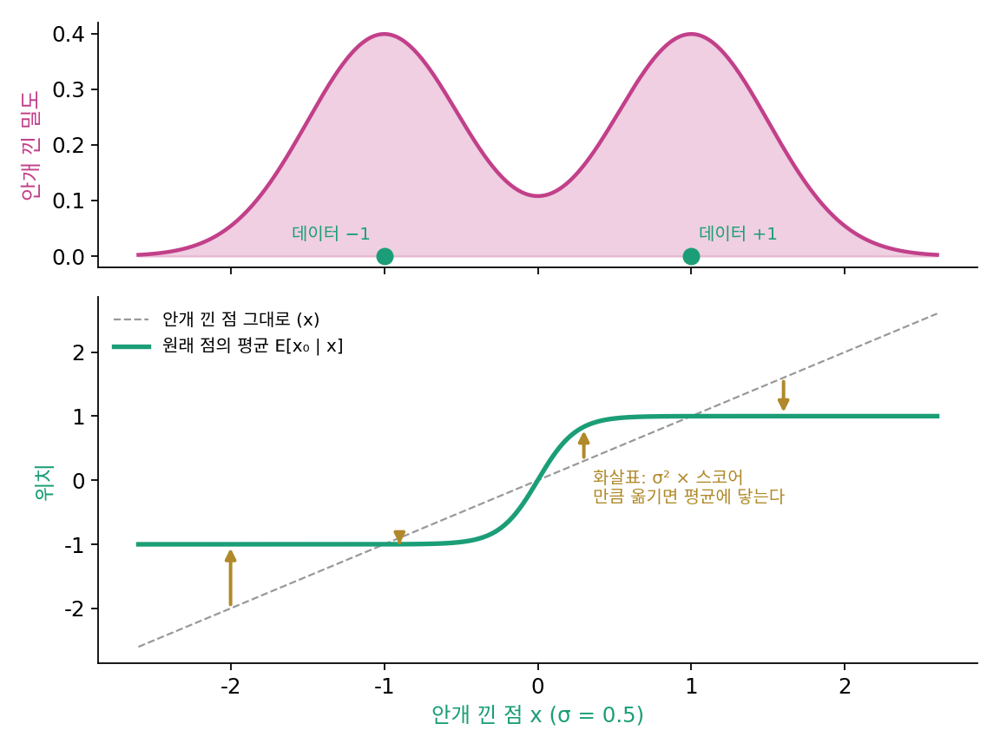
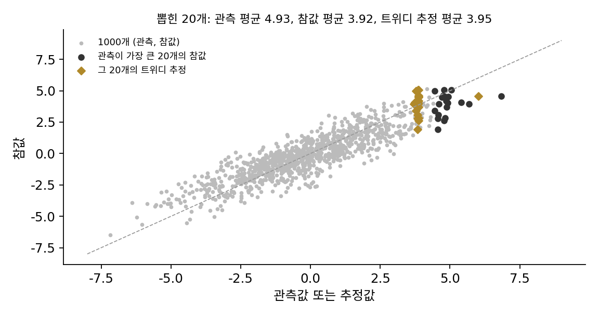

트위디 공식: 안개 속 바늘이 가리키는 곳
거꾸로 걸으려면 모든 잡음 수준에서 바늘이 있어야 한다. 그런데 안개 낀 지형의 바늘은 도대체 무엇을 가리키고 있을까? 학교에서 한 번쯤 겪어 본 일에서 출발하자. 시험을 유난히 잘 본 친구는 다음 시험에서 대개 그만큼은 못 본다. 받은 점수에는 실력과 운이 섞여 있어서, 점수 하나만 보고 실력을 짐작하려면 운의 몫을 덜어 내야 한다. 잡음 섞인 점 하나를 보고 잡음 섞이기 전의 점을 짐작하는 일도 같은 일이다.
두 점 데이터에 안개를 끼우면
가장 단순한 데이터로 시작하자. 데이터가 −1과 +1 두 점(반반)뿐이고, 크기 0.5인 잡음을 섞는다. 잡음 섞인 점 0.3을 보았다면 원래 점은 무엇이었을까? +1 쪽에 더 가깝지만 −1에서 왔을 수도 있다. 그 망설임을 담은 짐작, 곧 0.3 근처에 떨어진 점들만 모아 낸 원래 점의 평균을 표본으로 재고, 안개 낀 분포의 스코어로 계산한 값과 견주어 보자. 잡음 크기를 σ라 하면 이 분포의 스코어는 (tanh(x/σ²) − x)/σ²로 손으로 적힌다.
import numpy as np
rng = np.random.default_rng(0)
# 데이터: 두 점 ±1 (반반). 안개: x = x0 + σ ε
sigma, n = 0.5, 4_000_000
x0 = rng.choice([-1.0, 1.0], n)
x = x0 + sigma * rng.normal(size=n)
def score(y): # 안개 낀 분포 ½N(−1, σ²) + ½N(1, σ²) 의 스코어
return (np.tanh(y / sigma**2) - y) / sigma**2
for y in [0.3, 0.8, 1.5]:
near = np.abs(x - y) < 0.01 # 안개 낀 점이 y 근처인 것만 모은다
print(f"y={y}: 원래 점의 평균(표본) {x0[near].mean():.3f} 트위디 y + σ²·s(y) {y + sigma**2 * score(y):.3f}")
# y=0.3: 원래 점의 평균(표본) 0.832 트위디 y + σ²·s(y) 0.834
# y=0.8: 원래 점의 평균(표본) 0.997 트위디 y + σ²·s(y) 0.997
# y=1.5: 원래 점의 평균(표본) 1.000 트위디 y + σ²·s(y) 1.000
안개 낀 점에서 스코어 쪽으로 σ²만큼 걸어간 자리가, 그 점을 낳았을 원래 점들의 평균과 맞는다. 일반적으로 이렇게 적힌다.
이 식을 트위디 공식 (잡음 섞인 관측에서 원래 값의 평균을 스코어로 구하는 식 / Tweedie’s formula)이라 한다. 레이더 바늘은 「안개가 걷혔을 때 볼이 있었을 법한 위치의 평균」을 가리키고 있었던 것이다. 잡음을 섞을 때 원래 점을 αt배로 줄이며 섞는 경우(xt = αtx₀ + σtε, α(알파)는 원래 점이 남는 비율)에는 좌변이 αtE[x₀ ∣ xt]로 바뀔 뿐이다.
까닭은 세 줄이다. (1) pt(x)는 데이터 분포에 가우시안 종을 씌워 더한 것이다: ∫ pdata(x₀) N(x; x₀, σt²) dx₀. (2) 이것을 x로 미분하면 종의 기울기 (x₀ − x)/σt²가 적분 안에 곱해진다. (3) 양변을 pt로 나누면 적분이 「x를 본 뒤의 평균」이 되어 s = (E[x₀ ∣ x] − x)/σt²가 남는다. 유도 전체가 「가우시안 종의 기울기는 (x₀ − x)에 비례한다」는 한 가지 사실에 기댄다.

역사: 사전분포를 모르는 베이즈 추정
이 공식의 뿌리는 디퓨전 모델보다 반세기 넘게 앞선다. 1950년대 통계학자들은 같은 종류의 추정 문제가 수없이 쌓여 있을 때의 처지를 고민했다. 개체마다 참값이 있고 우리는 잡음 섞인 관측만 하나씩 보는데, 참값들이 어떻게 퍼져 있는지(사전분포)는 모른다. 사전분포를 알면 베이즈 정리로 관측마다 참값을 짐작할 수 있지만, 관측들의 분포에서 사전분포를 거꾸로 풀어내는 일(역합성곱)은 거꾸로 가는 열 방정식과 같은 불안정한 문제다. 무늬마다 e^(+Dk²t)를 곱해 되돌리려다 반올림 오차가 폭발하던 그 일이다.
허버트 로빈스(Herbert Robbins)는 1956년 버클리 학술대회 논문 「통계학에 대한 경험적 베이즈 접근」에서 이 문제를 비켜 가는 공식들을 내놓았다. 사건 횟수처럼 포아송 분포를 따르는 관측에 대한 공식을 보였고, 정규분포 관측에 대한 공식은 모리스 트위디(Maurice Kenneth Tweedie)와 주고받은 개인 서신 덕분이라고 밝혔다. 공식의 이름이 여기서 왔다. 요점은 사전분포를 풀어내지 않고, 관측들로 바로 잴 수 있는 관측의 주변 분포(그리고 그 로그의 기울기)만으로 참값의 평균을 짐작한다는 것이다.
이 공식은 한동안 잊혀 있다가 브래들리 에프런(Bradley Efron)의 2011년 논문 「트위디 공식과 선택 편향(Tweedie’s Formula and Selection Bias)」으로 다시 주목받았다. 수천 개의 효과를 한꺼번에 재고 그 가운데 가장 큰 몇 개를 고르면, 고른 것들의 관측값은 참값을 부풀려 보인다(선택 편향). 에프런은 트위디 공식이 관측의 주변 분포만으로 이 부풀림을 바로잡는다는 점을 보였다. 무엇을 골랐는지와 상관없이 관측값마다 같은 보정을 하기 때문이다.

디퓨전 모델은 같은 구조 위에 서 있다. 그림 수많은 장이 잡음 섞인 꼴로 주어지고, 잡음을 걷어 낸 원래 그림을 짐작해야 한다. 바뀐 것은 log pt의 기울기를 어림하는 도구가 히스토그램에서 신경망으로 바뀌었다는 점이다.
ML에서: 잡음 걷어 내기와 스코어는 같은 정보
트위디 공식을 거꾸로 읽으면, 잡음 섞인 그림 xt를 받아 원래 그림의 평균 x̂₀ = E[x₀ ∣ xt]를 내놓는 신경망만 있어도 스코어는 s = (x̂₀ − xt)/σt²로 바로 나온다. 잡음 섞인 그림에서 깨끗한 그림을 짐작하는 일과 레이더 바늘을 만드는 일은 같은 정보를 다른 꼴로 적은 것이다. 그런 신경망을 무엇을 맞히도록 어떻게 배우는지는 이 공식 위에 세워지는 다음 이야기다.
문제 12. 운이 섞인 시험 점수
어느 반 학생들의 실력(운이 섞이지 않은 점수)은 평균 70점, 표준편차 10점으로 퍼져 있다. 시험 점수는 실력에 운이 더해진 것이고, 운은 평균 0점, 표준편차 10점이며 실력과 무관하다. 한 학생이 시험에서 90점을 받았다. 이 학생의 실력을 숫자 하나로 짐작하면 얼마인가?

90점이요. 시험이 실력을 재려고 보는 거니까 받은 점수가 제일 좋은 짐작이죠.

이 반에서 90점을 받은 학생들만 모아 다음 시험을 보게 하면, 그 학생들의 평균은 또 90점 근처일까요?

아… 아닐 것 같아요. 90점을 받은 학생 중에는 실력이 80점인데 운이 좋았던 학생이 많을 거예요. 실력이 90점 넘는 학생은 원래 드무니까요.

실력의 분산이 100, 운의 분산도 100이라 점수의 흔들림은 반이 실력, 반이 운이에요. 그래서 평균 70에서 벗어난 20점 가운데 100/(100 + 100) = 절반만 실력으로 믿어요. 70 + 10 = 80점이에요.
점수에 섞인 운의 몫만큼 반 평균 쪽으로 당겨 짐작하는 거예요. 운이 클수록 더 많이 당겨요.
확률론 수업에서 배운 「평균으로의 회귀」네요. 둘째 시험에서 1등 학생의 점수가 대개 내려오는 것도 같은 까닭이에요.
문제 13. 안개 낀 가우시안
데이터가 x₀ ~ N(0, 1)이고, 잡음 σt = 2를 더해 x = x₀ + 2ε를 관측했다. (가) 잡음 섞인 분포의 스코어를 구하라. (나) 트위디 공식으로 x = 3일 때 E[x₀ ∣ x]를 구하고, 베이즈 정리로 직접 구한 값과 견주어라.
데이터가 N(0, 1)이니까 스코어는 −x예요. 트위디에 넣으면 E[x₀ ∣ x = 3] = 3 + 4 × (−3) = −9예요.
관측이 +3인데 원래 값의 평균이 −9라고요?

…그러네요. 데이터는 거의 [−3, 3] 안에 있는데 −9는 말이 안 돼요. 공식은 맞게 썼는데요.
나는 시뮬레이션으로 뽑아서 x가 3 근처인 것만 모아 x₀ 평균을 냈는데 0.60이 나왔어.

트위디 공식의 스코어는 어느 분포의 스코어였어요?

pt, 잡음 섞인 분포요. 저는 데이터 분포의 스코어를 넣었어요. 잡음 섞인 분포는 N(0, 1)에 N(0, 4)를 섞은 거라 N(0, 5)예요. 스코어는 −x/5, x = 3에서 −0.6이에요. 그러면 3 + 4 × (−0.6) = 0.6이에요.
베이즈로 해도 원래 값의 평균은 1/(1 + 4) × 3 = 0.6이에요. 세 값이 다 맞아요.
시험 점수 문제에서 실력의 분산을 전체 분산으로 나눠 반 평균 쪽으로 당겼던 거랑 같은 계산이네. 여기선 실력 분산 1, 운 분산 4라서 3의 5분의 1만 믿는 거고.
확률론 수업에서 독립인 두 값의 합의 분산을 계산할 때는 안 틀리는데, 기호가 pt로 바뀌니까 t를 떼어 먹었어요. 해석학에서 f와 f∘g의 도함수를 섞는 실수랑 같은 종류예요.
문제 14. 한 번에 뛰어 보기
그림 디퓨전 모델은 잡음 섞인 그림을 받아 「원래 그림의 평균」, 곧 트위디 공식의 E[x₀ ∣ xt]를 내놓도록 배울 수 있다. 그렇다면 가장 짙은 잡음 속에서 이 평균으로 곧장 한 번에 뛰면 그림이 나올까? 데이터가 두 점 ±1(반반)인 장난감으로 확인한다. 이 데이터에서 E[x₀ ∣ xt = x] = tanh(x/σt²)이다. (가) 짙은 잡음 σt = 2에서 x = 0.3에 선 점은 어디로 뛰는가? (나) 잡음 섞인 점 백만 개를 모두 한 번에 뛰게 하면, 도착점 가운데 데이터 ±1 근처(거리 0.1 안)에 닿는 비율은 얼마인가? 옅은 잡음 σt = 0.5이면?
(가)는 tanh(0.3/4) = 0.075예요. 트위디 공식이 원래 점을 알려 주니까, 모델이 몇백 번씩 걷는 건 낭비 같은데요. 한 번이면 되잖아요.
0.075라는 점은 데이터에 있어요?
데이터는 −1이랑 +1뿐이에요. 0.075는 그 사이 빈 땅이고요.

(나)를 백만 개로 돌렸더니 σt = 2에서는 ±1 근처에 닿은 게 0.7%뿐이에요. 67%는 −0.5와 0.5 사이에 떨어졌어요. σt = 0.5에서는 90%가 닿아요.
트위디가 주는 건 평균이지 표본이 아니야. 짙은 안개에서는 어느 볼에서 왔는지 거의 모르니까, 두 볼을 반반 섞은 평균, 곧 한가운데를 내놓는 게 제곱 오차로는 최선이고. 옅은 안개에서는 볼이 거의 하나로 정해져서 평균이 곧 그 볼이 되는 거고.
그림으로 옮기면 무슨 일이 생길까요?
짙은 잡음에서 한 번에 뛰면 고양이 여러 마리를 겹쳐 평균 낸 흐릿한 그림이 나오겠네요. 그래서 안개를 조금 걷고, 그 안개에 맞는 평균 쪽으로 조금 걷고, 다시 조금 걷고… 여러 걸음으로 나누는 거구나. 볼이 정해질 때까지는 평균 쪽으로 조금씩만 가야 해요.

「조금씩」의 크기를 정한 게 바로 거꾸로 흐르기의 식이었어요. 걸음마다 그 시간의 바늘을 다시 읽으니까요.
수학 수업에서 비선형 방정식을 뉴턴법으로 한 번에 못 풀고 여러 번 고쳐 가며 푸는 거랑 비슷하네요. 출발점에서 본 기울기는 멀리까지는 맞지 않으니까요.